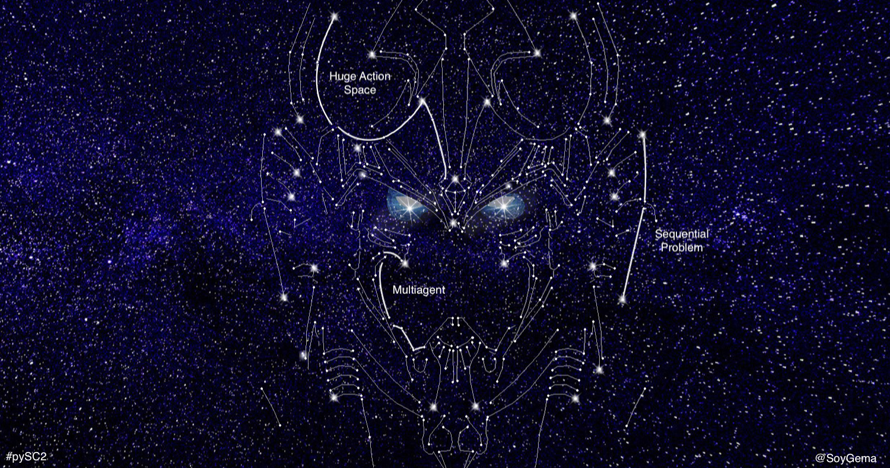
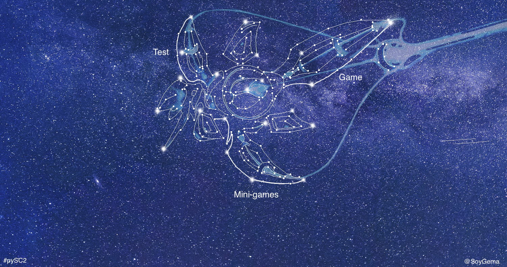
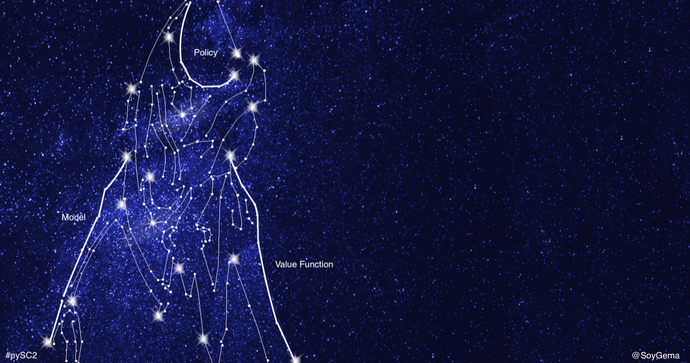
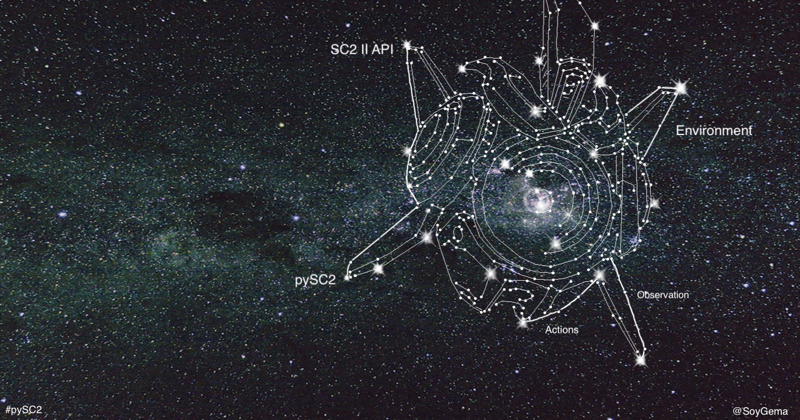
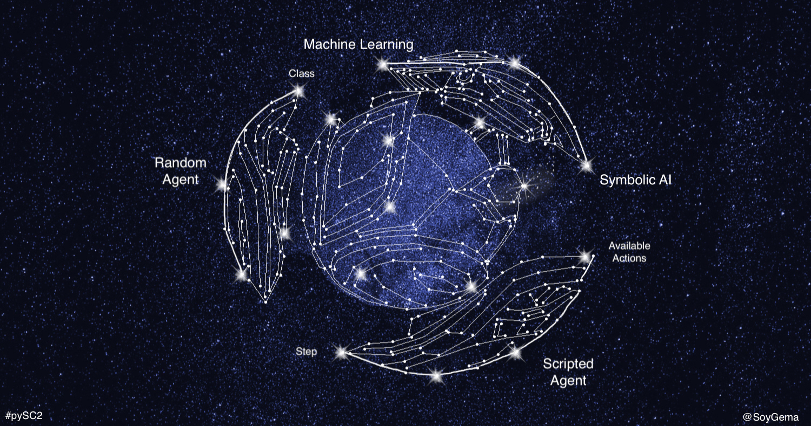
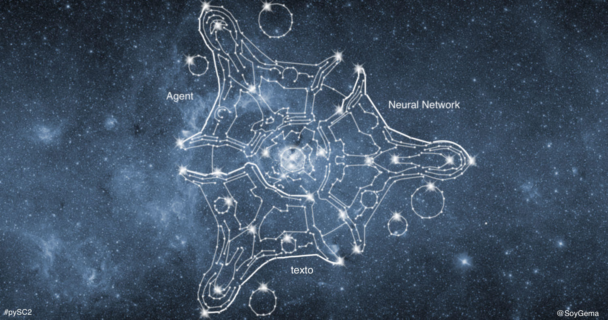
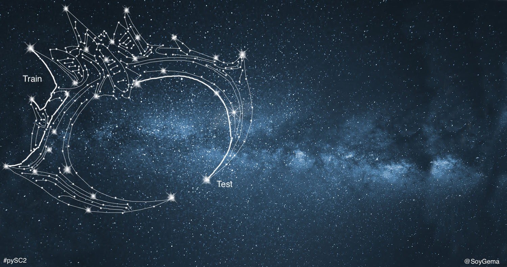
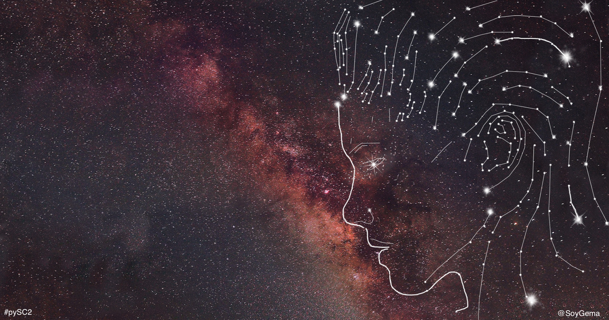
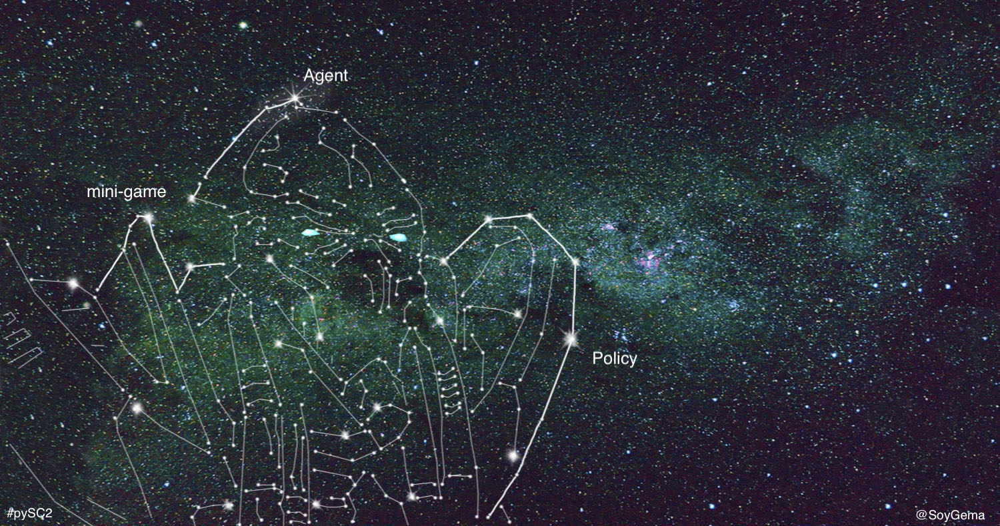

Overview
In this codelab, you will learn about Starcraft II Learning Environment project and to train your first Deep Reinforcement Learning agent. You will also discover an overview of DRL and some of the concepts and frameworks to code a ML agent.
Why Starcraft II ?
Computer games provide a compelling solution to the issue of evaluating and comparing different learning , control and planning approaches on standard tasks. They present themselves as perfect sandboxes to agents to be trained before being applied to real world problems . Behind this challenges we´re facing a General purpose learning problem,as videogames are systems that are capable of learning how to adapt in the real world .
SC2 is a Real Strategy Game developed by Blizzard after Starcraft I and BloodWar. It is an adversarial game : The goal is to collect resources, build a base, build some units and defeat the opponent that is trying to do the same thing.
Starcraft II presents as a game :
- Vast and diverse action space. There are listed approximately 500 actions as options that can be taken by an agent , and actions available that are displayed by the API . Actions among a combinatorial space of approximately 10e8 possibilities , divided in unit movements , building types and the set of actions evolves as the game and player does . The basic set of actions are approximately 50 times more than Atari games, so it adds a significant scale jump to the choices an agent might take , which leads to think about hierarchical actions, in both macro -strategy and economy- and micro -melee management-.
- Imperfect information game.Full game is a partially observable Markov decision process for the agent -Fog of war configuration-which forces the agent to explore in order to control de map and guess what the opponent is doing.
- Multi-agent problem in high and low level ,as several players compete for influence and resources and each player controls hundred of units which need to collaborate to achieve the goal.
- Sequential problem.The player must take early decisions with consequences that may not be seen until much later in the game. This situation makes the challenge suitable with Reinforcement Learning credit assignment problem.
What you'll learn
- What is pySC2
- Basics theoretical concepts of Deep Reinforcement Learning to get started
- Basic interaction with API
- Creating and training your Machine Learning agent
- Evaluating how training and evaluating works
What you'll need
- A computer connected to the internet with Python3 installed
- The library pysc2 installed
- Starcraft II game -no license required-
- keras
- keras-rl
What you need to know
- Basic driving of bash console
- Basic knowledge of python - data structures, lists, functions, loops -
- Basic knowledge of Object-oriented programming -classes, methods, decorators -
- Conceptual knowledge about Neural Networks
How would rate your experience with Machine Learning?
"With the right training, anyone can be in two places at once. But their mind must be fully open. Oh, and they need a psionic amplifier. That helps too." Repeatedly selected Protoss unit quote

"The stars align" Void Raid Protoss move order unit quote
Instalation of pySC2
This install section has been taken from PySC2 documentation. You can install it using pip :
$ pip install pysc2 # Python 2.7;
$ pip3 install pysc2 # Python 3.6
Or with git
$ git clone https://github.com/deepmind/pysc2.git # Clone repository
$ pip install pysc2/ # Install it with pip or pip3
Install the Game
Install Starcraft II -note that you don´t need to have the game paid- of SC2 for developing Machine learning.
PySC2 expects the game to be in Applications/StarCraftII/ .
For Linux, Follow Blizzard´s here documentation and click on the Linux Package versions be sure to install versions from 3.16.1 to above .
Be sure to type the password ‘iagreetotheeula’ linked to the machine learning license . For windows and mac , Install the game as normal from Battle.net
Download mini-games and full ladder maps
Download the ladder maps and the mini-games and put them into your StarcraftII/Maps/ folder. If the folder doesn´t exist , create it.
Download the Codelab material
This codelab will launch an agent from a mini-game made by some community members during last Blizzcon AI workshop . So be sure to download it
Go inside the pysc2_codelab_material folder and type :
$ pip install requirements.txt
Place the scripted_agent.py in Applications/StarCraftII/pysc2/agents
Install requirements
Once there, follow the instructions :
- Go to
pysc2\maps\mini_games.pyand add to mini-games array the following mini-games names
mini_games = [ ## This mini-games names should alredy been in your list
"BuildMarines", # 900s
"CollectMineralsAndGas", # 420s
"CollectMineralShards", # 120s
"DefeatRoaches", # 120s
"DefeatZerglingsAndBanelings", # 120s
"FindAndDefeatZerglings", # 180s
"MoveToBeacon", # 120s ##Now you add this few lines
"SentryDefense", # 120s
"HallucinIce", # 30s <--- NEW NAME
]
$ python -m pysc2.bin.agent --map HallucinIce
"The merging is complete" Trained Adept Protoss unit quote

"Prismatic core online" Stalker Protoss repeatedly selected order unit quote
The Reinforcement Learning Problem
The paradigm of learning by trial-and-error, exclusively from rewards is known as Reinforcement Learning . The essence of RL is learning through interaction , mimicking the human way of learning[1] with an interaction with environment and has its roots in behaviourist psychology .
For a definition of the Reinforcement Learning problem we need to define an environment in which a perception-action-learning loop[fig1] takes place . In this environment, the agent observes a given state t The agent, leaning in the policy, interacts with the environment by taking an action in a given state that may have long term consequences . It goes into a next state with a given timestep t+1 and updates the policy. At the end, the agent receives observations/states from the environment and a reward as a sign of feedback, and interacts with the environment through the actions.
[fig1] Perception-action-learning loop
In RL , we trait both prediction and control problems, drained by state-value or action-value function. When you go down algorithmically in this challenge, it comes in how you treat the value function and how the policy strategy affects to the agent .
The Reinforcement Learning problem can be described formally into a Markov decision process or MDP: it describes an environment for reinforcement learning, the surroundings or conditions in which the agent learns or operates. The Markov process is a sequence of states with the Markov property , which claims that the future is independent of the past given the present . That makes that we only shall need the last state to evaluate the agent.RL Agents
Reinforcement learning agents may include one or more of these components [2].
- Value function V(s). Acts as an evaluator and process how much reward we expects to get , or, in other words, measures how well we are doing . In RL taxonomy, you can find a classification that includes value based or policy based agents.
- Policy: Π . Understood as the Agent´s behaviour function. The policy maps from state to action , and can be deterministic or stochastic . RL taxonomy includes ON policy algorithms -learning on the job or OFF policy algorithms - learning from other behaviour- Policy ON and OFF algorithms differentiate about how it calculates the value function . On-policy algos have no memory and v(s) comes from the same policy. In Policy-off algos , V(s) comes from another policy . The goal of RL is to find an optimal policy which achieves the maximum expected return from all states.
- Model. Agent´s representation of the environment . RL taxonomy establish model free and model based agents. Model-based have the knowledge about the environment and can be partial or totally observable .
There are two main approaches to solving RL problems : Value-function and Policy Search[fig2] . There is an hybrid explored recently also known as actor-critic approach
[fig2] Policy learning explanation graphic approach
How Policy learning works : In a state St, we compute Q(s,a) and it takes one of the actions that helps to achieve the goal . The agents acts with the environment by executing actions, and the environment acts with the agent by giving it the observations inherited from the actions the agent took.
The value function
The Value function is a mathematical abstraction that acts as an evaluator of the agent. The reinforcement learning taxonomy and creation approach might define itself on how we treat the value function. It is important to underline that there are two kinds of value function :
- State-value function. V(s) : measures how good is to be in a particular state s.
- Action-value function. Q (s, a) : measures How good is to take a particular action . Bellman Optimality equation, which is basic for defining the RL solution approach , is based in the Action-value function.
Into Dynamic Programming context, policy search do not need to maintain a value function model, but search for an optimal policy .The process of producing an agent comes in two phases : policy evaluation and policy iteration ( improvement ) . They treat prediction and control problem respectively.[3] In some cases innovations come in the way we think and threat the value function.
What is Deep Reinforcement Learning?
Reinforcement Learning is an area of Machine Learning based on mimicking the human way of learning[1]. We will see later on that agents from pySC2 construct and learn their own knowledge directly from raw inputs , such as vision, using Deep Learning. The combination of these approaches, with the goal of achieving human-level performance across many challenging domains receive the name of Deep Reinforcement Learning[3]. DRL can deal with some of the problems that RL has like the curse of dimensionality [6] .In Deep Reinforcement learning, we use Neural Networks act as function approximator for solving the problem of finding optimal action-value functions ( Q -table ).
[6]In general, DRL is based on training deep neural networks to aproximate the optimal policy Π, and/or the optimal value functions V(s), Q and A . However, deep Q-networks are one way to solve deep RL problem . Another state of the art algorithm , A3C, introducing methods based on asynchronous RL. Video games may be an interesting challenge, but learning how to play them is not the end goal of DRL [4] , as the main goal is the vision of creating systems that are capable of learning how to adapt in the real world . In this codelab, we dig into a DRL agent for getting started with the machine learning challenge. Having said that, the environment present itself suitable for Reinforcement Learning in general and not only DRL .
DQN Algorithm Overview[fig3]
In a high level, the algo takes the input as the RGB pixels and gives the output of the value of the suitable actions that the agent might take with a given policy . It initializes random action-value functions Q (s, a) and in a loop of all episodes and all timesteps, follow a greedy policy in which selects a random action or the one in which the action-value function is higher with probability ε . Execute action and store transition tuple in memory .
[fig3] Deep Q-Network(DQN), adapted from Mnih et al(2015)
DQN Algorithm optimization : Target Network , Experience Replay and Hubber Loss
Experience Replayallows training using stored memories from its experience, and avoids to forget states that the Neural model hasn´t seen in a while. The idea behind experience replay consists in : at each Q-learning iteration, you play one step in the game, but instead of updating the model based on that step, you add the information from the step you took to a memory and then make a batch sample of that memory for training . [3] The Target Network brings stability to learning [7] . Every a number of iterations, we will make a copy of the Q-Network and use it to compute the target instead of the current Q-network. Hubber loss comes to estabilize learning in short and long term, as this function os quadratic for small values and linear for large values. For those familiarized with the loss function coming from Neural Networks , it comes to say that it diverges into two different implementations.
DQN variations: Double Deep Q-learning with dueling Network Architecture
Double Q-learning[fig4] is a model-free policy off algorithm can be used at scale to successfully reduce the overoptimism inherited from DQN, resulting in more stable and reliable learning. In Double Deep Q learning, two value functions V(s) are calculated : one set of weights is used to determine the greedy policy - improvement- and the other is used to determine its value -evaluation. In this case, the evaluation network trains and from time to time it passes the weights to the improvement network. Then the improvement network learns and passes it again to the evaluation network . [10]
Dueling DQN helps to generalize learning and the key insight behind the architecture is that for many states, it is unnecessary to estimate the value of each action choice.
Besides, it decouples the idea of action-value Q(s,a) function into state-value function V(s) and advantage function A(s,a), which leads to better policy evaluation, and has shown good results [11] , shining in attention and focus.The dueling network has two streams to separately estimate scalar state-value and the advantages for each action: a module implements an equation - non trivial- to combine them.

(Sound effect) Probe Protoss selected order unit quote
Overview
Find in this section a ripped version of pySC2 research published paper by DeepMind and Blizzard.
Starcraft II presents itself as a grand challenge for Reinforcement Learning for several reasons : The imperfect information of the game while playing forces to guess what the opponent is doing -curiously , it is Partially Observable Markov Decision Process due to fog of War- . Besides, the huge action space -combinatorial space of 10e8 possibilities - urges the need for hierarchy management, that might change as the tech player strategy evolves . The economy management . Real-time simultaneousness, with fast paced decisions and multitasking management presents the credit assignment problem as a necessity to be solved .
As the paper underlines, Starcraft II Learning environment offers a new environment for exploring DRL algos and architectures. Here we will explore and ripped some useful concepts about the environment that might be use to understand them . The full potential of this environment has yet to be seen , as it is a multi-agent environment at high and low level : several players compete for control over the map and resources , and ultimately win the match . In the low level, each player controls an army that must cooperate to achieve a common goal .
Starcraft II learning environment release consists of 3 subcomponents, 2 of those cited here :
- SC II Api . Used for start a game, get observations, take actions and review replays .
- pySC2 Using SC II Api , pySC2 is a Python environment that wraps the Starcarft II Api to ease the interaction between agents and Starcraft II . It defines action and observation specification
Game description and reward structure
The ultimate goal of the game is to win, so is the reward structure defined as win(+1) / tie(0) / loss(-1) . The ternary win/tie/loss is sparse enough to be accompanied by Blizzard score, which gives an intuition about the player´s development during the game - training units, building buildings and researching tech - and might, in some cases, be used as a reinforcement learning reward. In order to do so , the player should : accumulate resources, construct production buildings , amass an army and eliminate all of the opponent´s building . Other strategies might be used to win the game
Actions and observations
Observations
The games exposes observation from RGB pixels exposed as rgb_screen and rgb_minimap - view as a human would see - and in a Feature layers structure . Extra information beyond the screen is exposed as rgb_minimap Feature like the pySC2 interpreter . Inside features we must differentiate in between minimap feature layers and screen feature layers. One is looking at the screen and the other is looking at the top bottom left minimap .
Besides that, it offers as a structured information 10 Tensors with different data with relevant information for the player.

Feature Layer view, initialized with the game
Actions
Functions actions have been created to solve this problem availabe at pysc2.lib.actions . The actions are the output of the agent in every state t, that means, the decisions the agent must take in every time-step … PySC2 agent calls display available actions . Each action has its own argument or lists of arguments
Action Space atomic level defined in pySC2 - Image by Deepmind -
Agent Neural Net architectures
In DQN , The Neural Networks acts as an approximation function to find the Q-values. In pySC2 research, DeepMind has tried several Neural Networks architectures , which include the Atari and CNN+LSTM[fig4] architectures. Both of them processes spatial -screen- and non-spatial -vector of features- .The difference among the two of them is that Atari combines the Spatial and non-spatial features into a flatten layer that process the agent output, unrolling it into a space action policy through coordinates ( x and y ) and a value that will take the action . In the Neural Net architecture proposed by pySC2 paper it combines the spatial and non-spatial features into a NN .
Full Conv Architecture
Results
Here we have the comparison over different mini-games from pySC2 paper , in which there is an overview of how you can use different neural net architectures . In the Y axis, we find the score of the game, in the X axis we find the training time . As we can see, FullyConv and Atari Net start giving best results than the FullyConv with memory in the case of Defeat Roaches mini-game. However, this paradigm changes in the long term and so does the performance of different architectures in different challenges. The graph shown above ilustrates how the long tail shows that the early performance seems to be better in certain kind of NN architectures but at the end it changes and shows the best performance on LSTM+CNN . In Defeat Roaches case, starting learning quicker doesn´t mean that there will be a better performance when the NN stabilizes itself .
What are mini-games?
Mini-games are bounded challenges of the game worth of be investigated in isolation. The purpose of those is to test a subset of actions or game mechanics with a clear reward structure . This maps must be configured as Markov Decision Processes , with a initial setup, timing and reward structure that encourages the agent to learn a desired behaviour and to avoid local optima . Reward structure might have the same structure as the full game ( win/tie/loss) . This mini-games are characterized by restricted action sets, custom reward functions and/or time limits . If you want to see more mini-games you can visit the community mini-games repository or build your own tutorial , transforming DefeatRoaches mini-game into a designed melee in your DefeatWhatever configuration.
Tackling the whole SC2 problem is really hard, so mini-games comes to solve a smaller problem. Some thoughts may led you to think that mini-games are only useful if the knowledge is portable of a larger AI game , but it really depends on your goal. There is still room for great mini-games to come up with interesting nested problems for both micro and macro in SC2.[8]

"The task ahead is difficult, but worthwhile" Karax Protoss repeatedly selected unit quote
Configuration
You can configure all the requirements for getting started in the pysc2 official repository or in the step 2 of this Codelab . In this section we will test the running environment with the mini-game that we are going to train.
Run Random Agent
Open a terminal and type
$ python -m pysc2.bin.agent --map HallucinIce
You should see something like this
As you can check, there is nor learning neither strategy on this, as the agent is selecting random actions. In the pysc2 repository, you might see how a random agent works
class RandomAgent(base_agent.BaseAgent):
"""A random agent for Starcraft II pysc2."""
def step(self, obs):
super(RandomAgent, self).step(obs)
function_id = numpy.random.choice(obs.observation.available_actions)
args = [[numpy.random.randint(0, size) for size in arg.sizes]
for arg in self.action_spec.functions[function_id].args]
return actions.FunctionCall(function_id, args)
Basically, the RandomAgent class extends from the base_agent and we define what is doing at each step
, in which defines a variable that selects randomly an available action and call it with its arguments at each stepRun Scripted Agent
Scripted agents are a set of handcrafted rules that help the agents take a strategy You can type in your console
$ python -m pysc2.bin.agent --map HallucinIce --agent pysc2.agents.scripted_agent.HallucinIce
And should see something like this

class HallucinationArchon(base_agent.BaseAgent):
"""An agent specifically for solving the HallucinIce map with Archon Unit for Starcraft II pysc2."""
def step(self, obs):
super(HallucinationArchon, self).step(obs)
if _HAL_ARCHON in obs.observation["available_actions"]:
player_relative = obs.observation.feature_screen.player_relative
hellion_y, hellion_x = (player_relative == _PLAYER_HOSTILE).nonzero()
if not hellion_y.any():
return FUNCTIONS.no_op()
index = numpy.argmax(hellion_y)
target = [hellion_x[index], hellion_y[index]]
return FUNCTIONS.Hallucination_Archon_quick("now", target)
elif _SELECT_ARMY in obs.observation["available_actions"]:
return FUNCTIONS.select_army("select")
else:
return FUNCTIONS.no_op()
This agent creates a class in which observes if the Archon Hallucination is possible , locates the position of the enemy and calls the selection and Hallucination action.
Scripted agents might be able to execute programmed orders fast and straightforward. However, these agents are narrow , not able to execute orders outside those rules and, in the last phase, don´t learn and generalize well . In the next step we will jump into the machine learning agent

"Willingly." Mothership Protoss selected order unit quote
Into the machine learning agent
Here is presented an overview of the agent´s code : an informal walkthrough and descriptive inspection of the code, in order to help others to understand and improve the implementation . In a functional overview, the code is making the following steps.
- Import statements from libraries : pySC2, keras and keras-rl
- Load actions from the API
- Configure flags and parameters
- Configure processor with observations and batches
- Define the environment
- Agent model DNN Architecture
- Process of training the game
Agent Overview and DNN Architecture
We understand the agent as the Learner , the decision maker . There might be many different agents that can be used for this challenge The goal of the agent is to learn a policy -control strategy- that maximizes the expected return -cumulative, discounted reward-. The agent uses knowledge of state transitions, of the form (st, at, st+1, rt+1) in order to learn and improve its policy . In DQN , we use a Neural Network as a function approximator for the Q-values.
Deep Q Learning is a model-free off policy algorithm that will define the agent. If you want to know more about the basis of the agent , jump into The Step 3 and read what is Deep Reinforcement learning?The agent is constructed looking at the feature layers with a CNN-LSTM network. This network is an LSTM architecture specifically designed for sequence prediction problems with inputs, like images or videos. This architecture involves using Convolutional Neural Networks(CNN) layers for feature extraction on input data combined with LSTms to support sequence prediction .
In a general approach, this neural net architecture has been used for Activity Recognition, Image and video description
def neural_network_model(input, actions):
model = Sequential()
# Define CNN model
print(input)
model.add(Conv2D(64, kernel_size=(5, 5), input_shape=input))
model.add(Activation('relu'))
model.add(MaxPooling2D(pool_size=(2, 2), strides=None, padding='valid', data_format=None))
model.add(Dropout(0.3))
model.add(Conv2D(128, kernel_size=(3, 3), input_shape=input))
model.add(Activation('relu'))
model.add(MaxPooling2D(pool_size=(2, 2), strides=None, padding='valid', data_format=None))
model.add(Dropout(0.3))
model.add(Conv2D(256, kernel_size=(3, 3)))
model.add(Activation('relu'))
model.add(MaxPooling2D(pool_size=(2, 2), strides=None, padding='valid', data_format=None))
model.add(Dropout(0.3))
model.add(Flatten())
model.add(Dense(256, activation='relu'))
model.add(Reshape((1, 256)))
# Add some memory
model.add(LSTM(256))
model.add(Dense(actions, activation='softmax'))
model.summary()
model.compile(loss="categorical_crossentropy",
optimizer="adam",
metrics=["accuracy"])
return model
Policy and Agent
# Policy
policy = LinearAnnealedPolicy(EpsGreedyQPolicy(), attr="eps", value_max=1, value_min=0.2, value_test=.0,
nb_steps=1e6)
The policy helps with the selection of action to take on an environment. The linear annealing policy computes a current threshold value and transfers it to an inner policy which chooses the action. The threshold value is following a linear function decreasing over time. In this case we use eps-greedy action selection, which means that a random action is selected with probability eps.The value_max and value_min threshold settled regulates how the agent explores the environment and then gradually sticks to what it knows . []
# Agent
dqn = DQNAgent(model=model, nb_actions=nb_actions, memory=memory, enable_double_dqn=False,
nb_steps_warmup=500, target_model_update=1e-2, policy=policy,
batch_size=150,
processor=processor) ## TODO : Add delta_clip for hubber_loss
dqn.compile(Adam(lr=.001), metrics=["mae", "acc"])
The keras-rl DQNAgent class that calls the agent The model refers to the Neural Network coded above , so if you change the model, you can have different neural networks as an approximation function, the nb_actions take the actions available for the agent, that are printed when you run the agent in the console. The target_model_update and delta_clip parameters related to optimization and stable learning of Deep Reinforcement learning: target model update will tell us how oftenly the weights will be transferred to the memory. Delta_clip parameter refers to Huber loss implementation.
Another callbacks like tensorboard are added in order to visualize the learning.
DQN Algorithm has its own challenges . In keras-rl library you can implement in a straightforward way Replay memory, target Network and Huber loss by hyperparameters. For further evolutions and variations of DQN, you can study Double Deep Q Learning, Dueling Q-Learning and Rainbow algorithm

"The Void will answer" Mohandar Protoss trained order unit quote
Running and training
It´s time to get the agent running! Type in your console .
$ python3 CNN_LSTM.py
Visualizing in Tensorboard
There exist a pre-configured callback in the agent that allows to you to run Tensorboard. Once you start your training, type in your console. You should see something like this. Note that the path/Graph will be created once the training has started.
$ tensorboard --logdir path/Graph --host localhost --port 8088

"Hierach?" Talandar Protoss selected order unit quote
Try your own mini-game
You can try your own mini-game by changing the following steps in your pySC2 folder
- Create your mini-game. You can visit this tutorial that changes DefeatRoaches into DefeatWhatever melee
- Add your mini-game to the array in pysc2\maps\mini_games.py
- Add the mini-game name into the Flag config and training_game section of the agent_CNN+LSTM.py
- Run the agent in your console
- Add the mini-game name into the Flag config of the agent_CNN+LSTM.py
- Run the agent in your console
Your own policy or your own RL agent
You can customize the agent provided in several ways : You can change the policy and still use a DQN agent, that means that you will take another approach to the learning strategy but still use a Neural Network for function approximation. The trade-off between exploration and explotation is challenging and an on-going research topic. A recommended approach by keras-rl authors is Boltzmann-style exploration [3] , so if you feel like, give it a try and feel free to share your results !
Try pre-trained A3C in your own mini-game
Some members of the community -- have code A2C and A3C and have generously released a pre-trained agent. You can test your own mini-game, but this is what happens when HallucinIce mini-game was tested

As you can check, the agent learnt to hide and do nothing. Which take to think that not all algos are suitable for all the goals. Watch the results on A3C on HallucinIce mini-game, in which the agent learns to hide and go nothing

"What is it you seek, my friend?" Fenix Protoss repeatedly selected unit quote
You´ve made it!
It´ been an interesting ride. Now you know more about the Starcraft II research environment.
More resources
You can visit different sites with variety of depths.
- Blizzard´s and DeepMind´s blogposts
- PySC2 repository and paper
- PySC2 selected tutorials by Steven Brown
- RL tutorials by Cris-cris
- Community mini-games repo
- For some research about the full game you can visit TSTARBOTS Tencent paper
Bibliography
The following articles, papers, blog articles and conversations were used to make this codelab possible
- [1] DeepMind article Deep Reinforcment Learning https://deepmind.com/blog/deep-reinforcement-learning/
- [2] DeepMind article
- [3] keras-rl documentation
- [4]
- [5] keras-rl github policy
- [6] Conversation in discord in between
- [7]
- [8] CNN+ LSTM ## Quora https://www.quora.com/How-does-the-CNN-LSTM-model-work
- [9]
Like it ?
Star it on github!